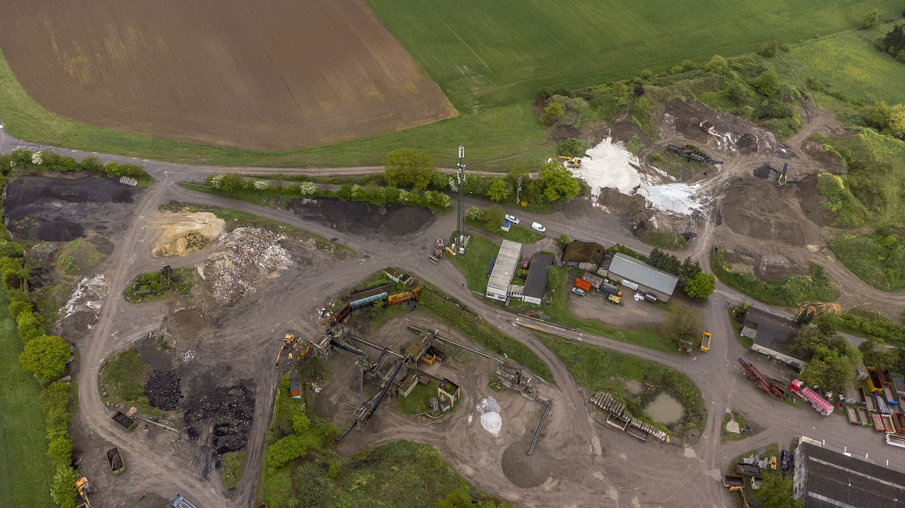
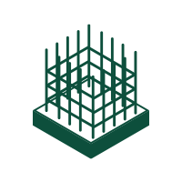
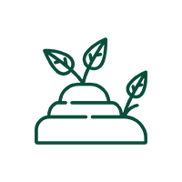
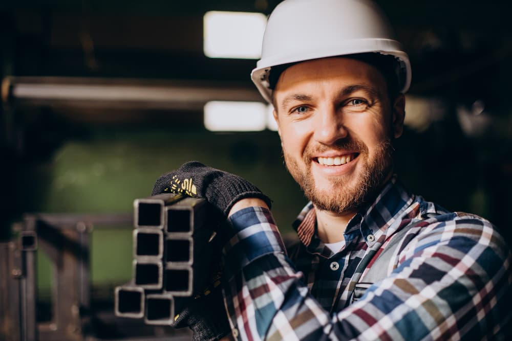

Binnenkort
Samenwerking met een netwerk voor bouwmaterialen
Stenen, buizen, blokken, geotextiel…

Beton, metselpuin, asfalt, uitgegraven grond. We nemen ze aan op onze sites, breken ze en verkopen ze opnieuw als gerecycleerde granulaten voor uw werven.
Het inerte werfafval dat we op onze sites aanvaarden.


De officiële informatie over grondbeheer in Wallonië vindt u bij Walterre (het Waalse equivalent van Grondbank), of contacteer Christophe Matthys, onze verkoper voor grond.
U kunt uw afval storten en granulaten meenemen, op dezelfde plek.
Beton, gemengd metselpuin en andere bouwmaterialen.
Tarieven bekijkenAanvaarding van grond van type I tot V op onze verschillende sites.
Sites & tarieven bekijkenGemengd, asfalt, beton en zand voor uw projecten.
Tarieven bekijkenRecystab-e voor funderingen en stabilisatie.
Tarieven bekijkenPVC-buizen, drainagebuizen, mantelbuizen en geotextiel.
Tarieven bekijken
U zegt ons wat u wilt storten. Wij zeggen u welke site en welk tarief.
De vrachtwagen wordt bij de ingang gewogen. Op vraag sturen we u de weegbon.
De materialen worden gebroken, gezeefd en gecontroleerd.
Ze vertrekken opnieuw als granulaten naar andere werven.
Bel ons of vraag een offerte aan.
Stenen, buizen, blokken, geotextiel…
Voor de productie van stabilisé en mager beton.
Een andere vraag? Bel ons op 085 21 74 45.
Ja voor grond: die wordt aanvaard onder voorbehoud van voorafgaande goedkeuring door onze kwaliteitsdienst, en de NMT (Waalse melding van grondverzet) moet ons bezorgd worden vóór de eerste stortingen. Voor bouwafval volstaat een telefoontje om te weten welke site en welk tarief van toepassing zijn.
Volgens gewicht. Elke vrachtwagen wordt gewogen op de weegbrug van de site, en de prijs hangt af van het soort afval en hoe zuiver het is. Voor stortingen en afhalingen van minder dan 5 ton geldt een toeslag van 7,50 €. U kunt uw prijs online ramen.
Ja. Al onze stortplaatsen hebben een weegbrug, en op vraag bezorgen we het weegoverzicht in Excel.
Een niet-conforme storting wordt als klasse 2-afval beschouwd en zo aangerekend. Twijfelt u over uw lading? Bel ons voor u komt.
Grond van type I tot V, afhankelijk van de site: Braives, Fosses-la-Ville, Transinnes en Sambreville aanvaarden niet dezelfde types en niet onder dezelfde voorwaarden. Alle details staan in ons grondtarief. De officiële informatie over grondbeheer in Wallonië staat op Walterre.
Ja. Onze granulaten zijn conform de norm NBN EN 13242. De prestatieverklaringen en kwaliteitscontroles kunt u downloaden op de pagina technische fiches.
Ja, wij kunnen leveren. De vermelde prijzen gelden af site Braives: vraag ons een prijs met levering.